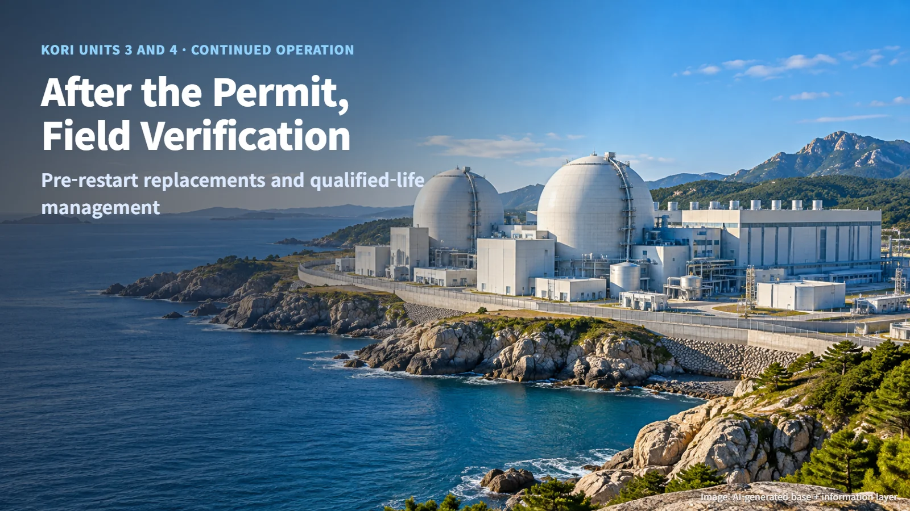
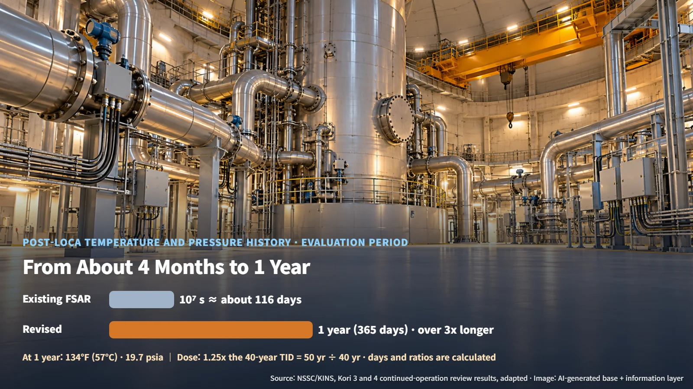
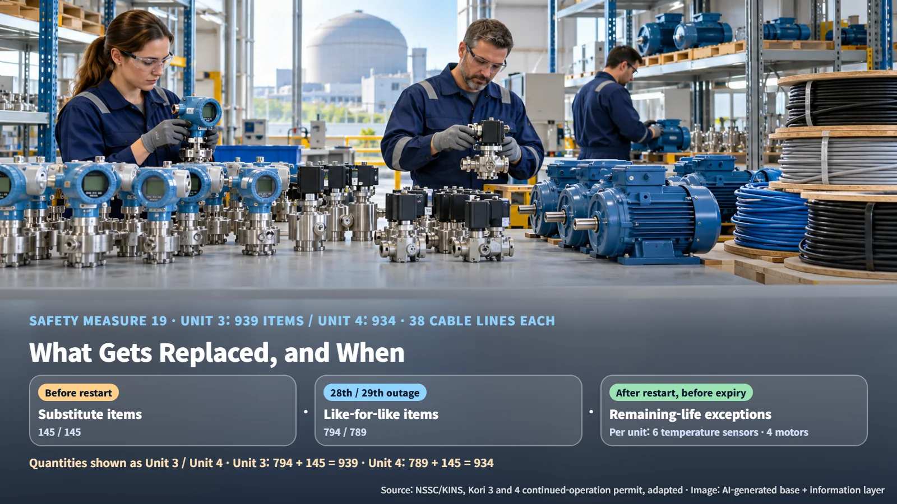

South Korea · Continued Operation
Kori Units 3 and 4 Win Continued-Operation Approval: What Remains Before Restart, and the Qualified Life of 939 Components
The NSSC has approved ten more years for Kori Units 3 and 4; restart now depends on field verification and replacing equipment whose qualified life is expiring.
On October 27, 2026, South Korea's Nuclear Safety and Security Commission (NSSC) approved Korea Hydro & Nuclear Power's (KHNP) application for continued operation of Kori Units 3 and 4. With the permit in hand, the natural questions are when the units will generate power again and what has to change in the meantime. The answer becomes clear once you follow the thread that ran through the whole review: environmental qualification of safety equipment.

After the Permit Comes Field Verification: The Stages of Continued Operation
Each unit is a 1,025 MWe pressurized water reactor, a design that keeps water under high pressure so it carries heat away from the core without boiling. The permit sets the operating period through September 28, 2034 for Unit 3 and through August 6, 2035 for Unit 4. The ten-year extension is counted from the date each unit's 40-year design life expired (September 2024 for Unit 3, August 2025 for Unit 4).
Counting from the permit date of October 27, 2026 to the end of each operating period gives about 7 years 11 months for Unit 3 and about 8 years 9 months for Unit 4. The time spent on review and preparation after the design life expired comes out of the remaining operating window.
The process runs in four stages. KHNP submitted its Periodic Safety Review (PSR, a periodic, comprehensive safety assessment of a nuclear plant) in September 2022, and two items were added to the existing 14 evaluation areas: a life assessment of major components and a radiological environmental impact assessment. The Korea Institute of Nuclear Safety (KINS) reviewed the application from May 2023 to September 2026, followed by an expert committee review. This decision completes the first stage, the continued-operation permit. Next comes field verification that follow-up actions such as equipment upgrades have been carried out, then restart approval, and after that lifetime management during operation. Unit-by-unit completion rates and restart approval dates have not yet been disclosed.
What Environmental Qualification Means: Equipment That Must Work in an Accident
Environmental qualification (EQ) confirms that the equipment in scope can still perform its safety and accident-mitigation functions under design-basis accident conditions. In practice, valves must still open and sensors must still send signals even when the containment building is filled with hot steam.
A water-resistant watch is a useful comparison. Its water resistance is confirmed by testing at a specified depth for a specified time. Nuclear plant equipment is likewise proven to function only for the conditions and duration confirmed by testing and analysis, which defines its qualified life. Time-limited aging analysis (TLAA, the process of re-evaluating whether original analyses of age-related degradation remain valid for the extended period) re-checks these time assumptions.
When the operating period grows from 40 to 50 years, the qualification basis for every individual component has to be re-established to cover 50 years. Items whose qualified life is expiring regain it through replacement, testing or re-evaluation.
What Changed: A One-Year Accident Environment and 1.25 Times the Radiation Dose
The operating license amendment includes one change to environmental requirements, two changes to cumulative radiation dose, and eight design changes to substitute equipment related to environmental qualification.
The first change is the length of the post-accident environment. For a loss-of-coolant accident (LOCA, an accident in which reactor coolant escapes through a pipe break or similar failure), the temperature and pressure history in the existing Final Safety Analysis Report (FSAR) ran to 10^7 seconds. That is 10,000,000 seconds ÷ 86,400 seconds per day ≈ 116 days, or about four months. The revised assessment extends this to a long-term cooling period of one year, which works out to more than three times as long (365 days ÷ 116 days). At the one-year point, the temperature is given as 134°F (57°C) and the pressure as 19.7 psia (135.8 kPa; psia is a unit of absolute pressure).
The second change concerns total integrated dose (TID, the maximum cumulative dose during operation for each compartment). The continued-operation assessment applies 1.25 times the 40-year normal-operation TID: 50 years ÷ 40 years = 1.25, so the assumed dose rises in step with the longer operating period. For the auxiliary building, the assessment now reflects the actual 2 ft thickness of the concrete shielding wall, replacing the earlier 1 ft assumption.

The eight design changes that switch to different products suited to the new environmental conditions cover pressure transmitters, solenoid valves, valve controllers, fuel building air-handling isolation dampers, emergency exhaust isolation dampers, 480 V low-voltage switchgear, containment radiation detectors, and emergency ventilation heater control panels. They are reflected in FSAR Chapters 1, 3, 8 and 12. KINS confirmed that the substitute equipment meets the technical standards for seismic qualification, structural integrity, fire protection and environmental qualification.
939 Components: What Gets Replaced, and When
Safety Measure 19 covers re-evaluation and replacement of components and cables that have reached the end of their qualified life. The scope is 939 components and 38 cable lines for Unit 3, and 934 components and 38 cable lines for Unit 4. Broken down, Unit 3 has 794 like-for-like items + 145 substitute items = 939, and Unit 4 has 789 + 145 = 934.
What makes these numbers interesting is that the replacement timing splits three ways:
- 145 substitute items: replaced after licensing approval and before restart
- Like-for-like items: replaced during the 28th planned outage (OH, a scheduled shutdown for maintenance) for Unit 3 and the 29th for Unit 4, both of them outages before the continued-operation restart
- Remaining-life exceptions: six temperature sensors and four motors per unit, replaced after restart and before their qualified life expires
(Source: NSSC and KINS, Kori Units 3 and 4 continued-operation permit and review results, adapted)
The 38 cable lines whose qualified life has expired will be replaced, and the detailed schedule is still to be confirmed. Among the 20 published safety measures, items such as replacing seismic instruments and re-evaluating recirculation sump performance are planned for later maintenance outages.

In short, the substitute and like-for-like replacements are scheduled to be completed before restart, while the remaining-life exceptions will be replaced during operation before their qualified life runs out. The next milestones to watch are the NSSC's field verification of follow-up actions, the restart approval, and the inspection and replacement records during operation. Whether each component listed in the permit documents is actually replaced on time in the plant is what underpins the safety of the ten years of continued operation.